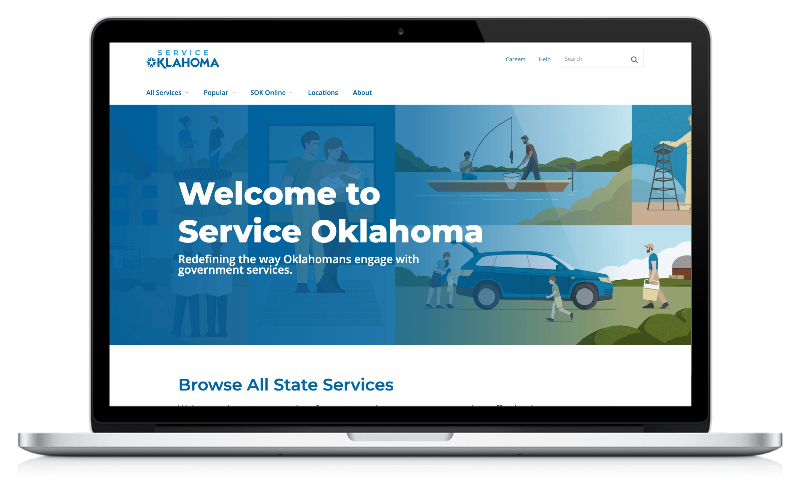
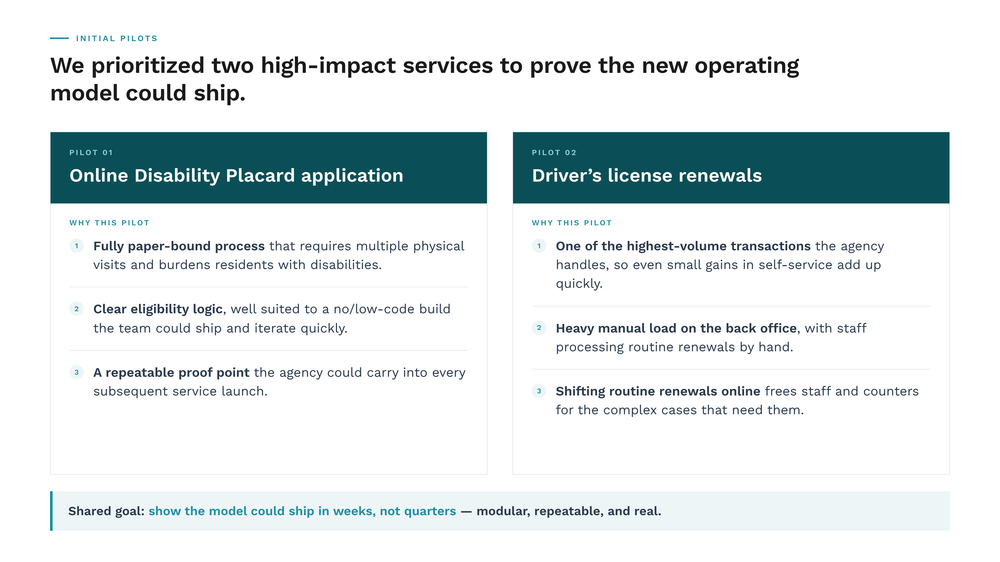
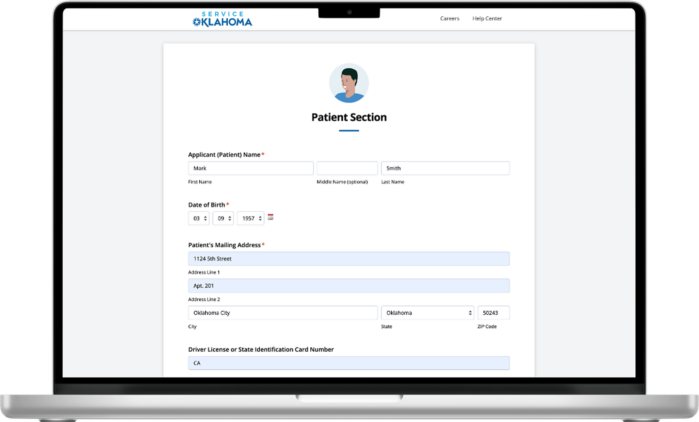
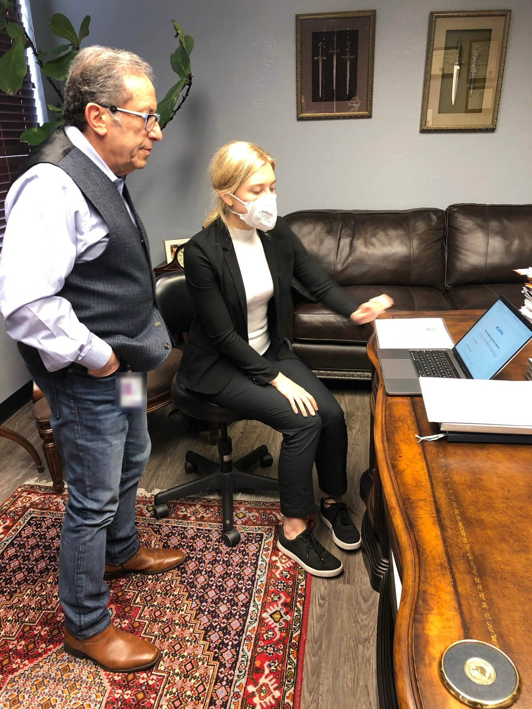

A new agency built to deliver private-sector-quality experience for every digital government service in Oklahoma.
Jump to results ↓
The State of Oklahoma sought to stand up an entirely new digital government agency that would be responsible for the resident experience across every service in the state.
The brief was twofold: deliver a best-in-class customer experience on par with leading private-sector companies, and drive significant efficiency gains across operations.
We identified two government services as our starting points for transformation: disability placard applications (fully manual at the time), and driver’s license renewals (a disjointed and lengthy process).

Over a 3-month sprint, we identified two high-impact pilots — disability placard applications and driver’s license renewals — and took discovery into the field, observing how residents, government employees, and doctors’ offices moved through each service today. We translated those findings into future-state vision maps and digital prototypes.
From there, we tested and learned in rapid loops, ultimately launching a new government site and two transformed services within three months. Our low-code methodology ensures that the experience can evolve in real-time when Service Oklahoma receives feedback, without the typical burdens of a complex government tech stack.
Throughout the process, we trained our Service Oklahoma counterparts on how to run innovation sprints so that they can keep designing and launching new services in perpetuity.


Service Oklahoma launched as a new, omni-channel agency built to make government services easier for every Oklahoman — pairing a single digital front door with in-person and phone support. Using low-code tools and a standardized architecture, we shipped disability placard applications and driver’s license renewals as pilots, and refined them with public feedback.
The first, a fully digital placard application built with support from the State Medical Board, let residents apply from home or their doctor’s office — cutting wait times by 80% and eliminating 60% of the steps required.
Service Oklahoma has continued to roll out primary services since its launch, using the baseline of our work together as a framework. To learn more, check out Service Oklahoma here.
Increase in customer self-service across all services.
Cost reduction through operational efficiency across launched digital pilots.
Reduction in wait times for disability placards.
NASCA ‘Innovation in State Government’ award winner.